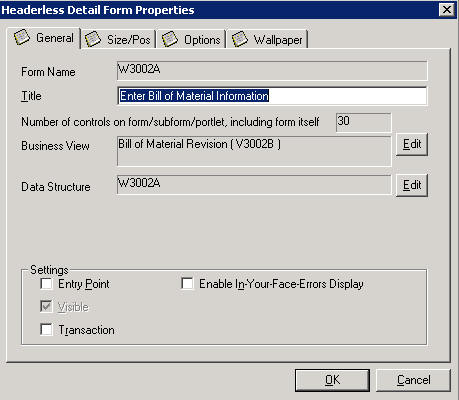

This is a brief introduction to the use of Transaction Processing within JD Edwards EnterpriseOne Manufacturing.
Information Center: Overview of JD Edwards EnterpriseOne Product Data Management > Information Center: Troubleshooting JD Edwards EnterpriseOne Product Data Management > Document 989586.1
Transaction
A transaction is a logical unit of work that is comprised of one or more SQL statements and performed on the database to complete a common task and maintain data consistency. Transaction statements are closely related and perform interdependent actions. Each statement performs part of the task, but all are required for the complete task.
Transaction Boundary
Data interdependence is defined by a transaction boundary. A transaction boundary encompasses all of the data elements that comprise a transaction. A transaction boundary might include only data elements on a single form, multiple forms, or a call to the MBF EndDoc.
Commit
A commit is an explicit command to the database to permanently store the results of a transaction. This is the successful end of a transaction.
Rollback
A rollback is an explicit command to the database to cancel the results of a transaction. Any failure of an insert, update, or delete within a transaction boundary will cause all record activity within that transaction to rollback. If no failures have occurred at the end of the transaction, a commit is done and the records become available to other processes.
Transaction Processing is a JDEBase middleware function that ensures related data is added to or deleted from the database simultaneously, thus preserving data integrity in an application. The application can then request the database management system to buffer the database operations until the application executes a specific command via JDEBase API's to perform the updates requested within the transaction. Database operations that are not part of the transaction update the database immediately. In Transaction Processing data is not written to the database until a commit command is issued. When this happens data is permanently written to the database.
For example, if a transaction comprises database operations to update two database tables, either all updates will be made to both tables, or no updates will be made to either table. This guarantees that the data remains in a consistent state and the integrity of the data is maintained.
If Transaction Processing is on in an application, updated records cannot be seen until an update has been committed to the database. Only processes within that transaction can access records in the transaction set until the transaction is complete.
Note: For further information on Transaction Processing please see the Tools Development Volume 1 manual for your respective release.
Whether Transaction Processing is on or not will be stored in FDASPEC (or equivalant runtime specification). So transaction processing will be handled by Kernel Level in accessing Database through JDBC or ODBC.
If Transaction Processing is on,
SQL> BEGIN TRANS (or, BEGIN TRANSACTION) is to be written to be ready for rollback when a certain DML (Data Manipulation Language)
SQL> (for example) UPDATE/INSERT TABLES
SQL> (If sucess then) COMMIT TRANS (or COMMIT TRANSACTION)
SQL> (If fails then) ROLLBACK TRANS (or ROLLBACK TRANSACTION)
: For this case UPDATE/INSERT is uncommitted data which are written in Redo Log File (for SQL or Oracle DB) or Journaling Library before it gets written into data file
How to turn it on and off
To turn it off:
1. Go to Form Design Aid
2. Look for form which has problem or Data Entry (for add/update usually form name appears to be xxx Revision)|
3. Go to Form Properties
4. Un-tick 'Transaction' check box

If transaction is on in a certain application it may hit a 'Web Client Exception' or JAS Database error
A. e1root_*.log contains "*ERROR* CallObject@35403540: COSE#1000 Request timeout: timeout after 90000ms host JDEAPP:6015(49176) SocID:1166 PID:1060 BSFN:F3002EndDocument user:ADELINE Env:JPD900"
: timeout error has to come only when 'Transaction Processing' is on so it appears to me that the setting seems causing problem
B. Owing to record locking against F4102 (to update 'Low Level Code' and 'MRP Net Change Flag') we removed transaction processing settings
a. Low level code will get updated through bsfn B3001080 - UpdateLowLevelCodes
b. MRP Net change flag will get updated through bsfn B4000930 - UpdateF4102MRPNetChg
: for this example, two different BSFNs are updating table F4102 so when transaction processing is on (or MANUAL COMMIT is on) there is chance of locking.
Some examples are,
Details:
A. Bug 11012950: FT:Mfg Plan001Single Plant MRP (or DeadLock in P3002)
a. Description of Issue: Web client exception and Transaction error occurs while adding BOM
b. Object affected: P3002 – Bill of Material Revisions
c. Final Disposition: When BOM is created error is thrown. TP from P3002 has been removed to resolve the issue.
d. Implementation: Revoked the TP and now the issue does not occur.
B. Bug 10947043: JAS_MSG346: JAS database failure
a. Description of Issue: When adding more than 1 order message, manually, to the P3411, the system throws a Error: JAS_MSG346: JAS database failure: [OBJECT IS CLOSED Object is closed. The error message responds when entered in grid, or import from excel.
b. Object affected: P3411 - MRP/MPS Detail Message Revisions
c. Final Disposition: When adding more than 1 order message, manually, to the P3411, the system does not throw an error now. The records are saved correctly.
d. Implemenation: Since the particular record has been already locked in TP by the function "UpdateLowLevelCodes", update in the bsfn "UpdateF4102MRPNetChg" was not successful. Solution: In bsfn "UpdateLowLevelCodes", move the F4102 update out of transaction boundary similar to "UpdateF4102MRPNetChg". Both updates need to be outside of TP. Also check for other F4102 updates by using "Find in files" to forecast this kind of issues. Issue on APPL P3460:
o B3001080 – UpdateLowLevelCodes (F4102 Update Low Level Codes)
o B4000930 - UpdateF4102MRPNetChg (F4102 Update MRP Net Change)
1. Analyze the jdedebug.log For example:
: DBInitRequest is done M (MANUAL)
2. Other considerations-
| Object | Description | Type | Xe | 8.0 | 9.0 | 8.9 | 8.10 | 8.11 SP1 | 8.12 | 9.0 | 9.1 |
|---|---|---|---|---|---|---|---|---|---|---|---|
| P3002 | Bill of Material Maintenance | APPL | N | N | N | N | N | N | Y->N | Y->N | N |
| P3003 | Routing Maintenance | APPL | N | N | N | N | N | N | Y | Y | Y |
| P31113 | Inventory Issue | APPL | N | N | N | N | N | N | N | N|Y | Y |
| P311221 | WO Time Entry | APPL | N | N | N | N | N | N | Y | Y | Y |
| P31B317B | Speed Advanced Comment | APPL | N | N | N | N | Y | Y | Y | Y | Y |
| P31B65A | Create/Edit Operations | APPL | N | N | N | N | Y | Y | Y | Y | Y |
| P31B67 | Speed Actuals Update | APPL | N | N | N | N | Y | Y | Y | Y | Y |
| P31B76 | Speed Quality Results | APPL | N | N | N | N | Y | Y | Y | Y | Y |
| P31B78 | Create Operations From Vessel List | APPL | N | N | N | N | Y | Y | Y | Y | Y |
| P31B94 | Search for Operations | APPL | N | N | N | N | Y | Y | Y | Y | Y |
| P31B95 | Search for Work Order | APPL | N | N | N | N | Y | Y | Y | Y | Y |
| P31B96 | Speed Operation Update | APPL | N | N | N | N | Y | Y | Y | Y | Y |
| P3460 | Forecast Revisions | APPL | Y | Y | Y | Y | Y | Y | Y | Y | Y |
| P48013 | Manufacturing Work Order Processing | APPL | N | N | N | N | N | N | Y | Y | Y |
| R30510 | ECO Change Population | UBE | N | N | N | N | N | N | Y | Y | Y |
| R30835 | Frozen Cost Update | UBE | Y | Y | Y | Y | Y | Y | Y | Y | Y |
| R31422 | Hrs & Qty Update | UBE | N | N | N | N | N | N | Y | Y | Y |
| R31802A | Manufacturing Accounting | UBE | N | N | Y | Y | Y | Y | Y | Y | Y |
| R31B65AZ | Operations Inbound Processor | UBE | N | N | N | N | Y | Y | Y | Y | Y |
| R48132 | G/L Journal Generation | UBE | N | N | N | N | Y | Y | Y | Y | Y |
| R48S781 | Create Retroactive Adjustments | UBE | N | N | N | N | Y | Y | Y | Y | Y |
| RF31011A | Multi Level Item Completions | UBE | N | N | N | N | N | Y | Y | Y | Y |
| RF31011B | Multi Level Item Completions | UBE | N | N | N | N | N | Y | Y | Y | Y |
| RF31011C | Multi Level Item Completions | UBE | N | N | N | N | N | Y | Y | Y | Y |
| RF31011L | Multi Level Item Completions | UBE | N | N | N | N | N | Y | Y | Y | Y |
| RF31012 | BOM and Routing Detail Generation - Item/Branch | UBE | N | N | N | N | N | Y | Y | Y | Y |
| RF31200 | Lean MFG Accounting | UBE | N | N | N | N | Y | Y | Y | Y | Y |
| RF31210 | Lean MFG Variance Acctg | UBE | N | N | N | N | Y | Y | Y | Y | Y |
| RF31220 | Lean WIP Revaluation | UBE | N | N | N | N | Y | Y | Y | Y | Y |
<Internal_Only>P3411 is removed from the list on Feb-13-2012</Internal_Only>